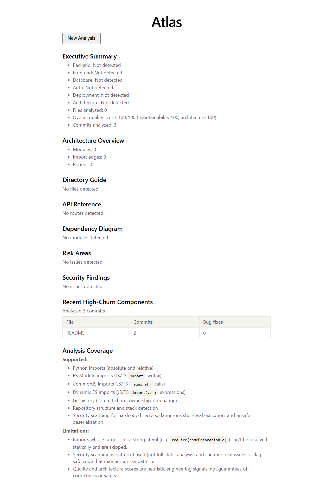
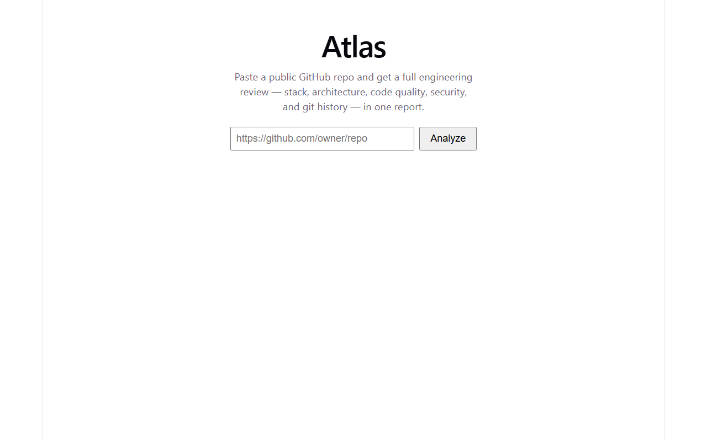
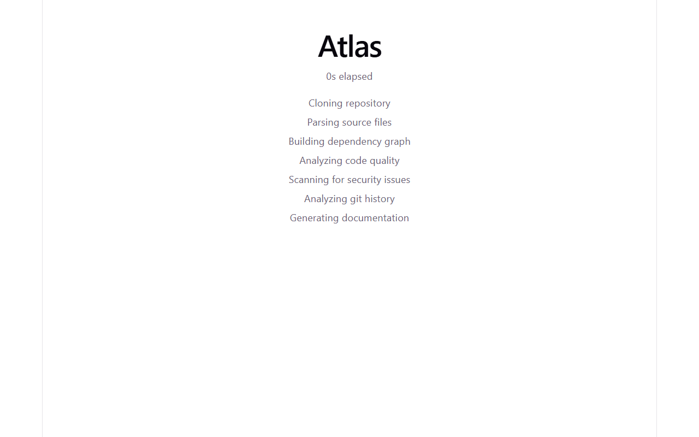

SOFTWARE INTELLIGENCE PLATFORM · NO LLM IN THE PIPELINE
Paste a public GitHub URL. Atlas clones it, parses it, and hands back architecture, code quality, git history, and security findings — every one traceable to an AST, a graph algorithm, or a commit log, not a model's best guess.
Every score, edge, and finding in a report traces back to something you can point at: a tree-sitter AST, a networkx graph algorithm, or a parsed git log — never a language model's summary of your code.
Sheet 01 — Pipeline
Five real stages, run in order, on your machine or the CI runner that validates them.
One shallow-plus-history clone — not two separate fetches for the analysis and the git log.
Tree-sitter builds real ASTs for Python and JS/TS/JSX/TSX — no regex guessing at syntax.
Imports, routes, and modules become a directed graph — the shape everything below reasons over.
Circular imports, complexity, secrets, churn, and ownership — read off the graph and the log.
One Markdown report — architecture, risk areas, a Mermaid diagram, recent hotspots.
Sheet 02 — Engines
Six independent engines. Each produces structured data; none of them phone out to an LLM.
Detects stack, frameworks, database, and deployment shape before anything else runs.
A real dependency graph of modules, imports, and routes — explorable, not just described.
Circular imports via strongly-connected components, oversized functions, naming drift — scored.
Deterministic checks for hardcoded secrets, dangerous exec, and unsafe deserialization.
File churn, bug-fix hotspots, ownership, and co-change pairs — pulled straight from git log.
Everything above, assembled into one Markdown report with a live Mermaid dependency diagram.
Sheet 03 — Interface
A job survives a page refresh mid-analysis. Dark mode and a fully responsive mobile layout ship too.



Sheet 04 — Architecture
A stateless FastAPI backend, a SQLite-backed job queue, and a React frontend that polls it.
Read the full architecture doc, including the request-flow diagram and data-flow constraints →
Sheet 05 — Real Output
Generated by the tool itself against public repositories, nothing hand-edited.
A mid-sized Python CLI framework — a real 22-module circular-dependency cluster, 89 complexity findings, and churn across 500 commits.
A CommonJS-heavy Node.js repo — 84 routes detected via require()-based imports, clean architecture score.
See measured runtime and memory from 10K to 250K lines of code →